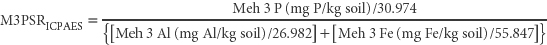

The data used to calculate M3PSRICPAES are obtained from the multi-element soil test of Mehlich (1984), specifically Method 18F1 for Mehlich 3-Fe, Mehlich 3-Al and Mehlich 3 P. All use ICPAES as the analytical finish. All input data are expressed as molar concentrations. Expect a slightly higher Mehlich 3 P value with ICPAES relative to the alternative colorimetric finish. Interpretative guidance is provided in Method 9K. For brevity, Mehlich is shown as Meh in the following calculation.

Report M3PSRICPAES (as a unit-less index value) on a w/w air-dry basis.